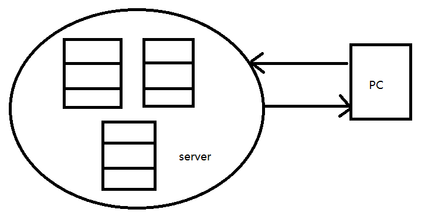
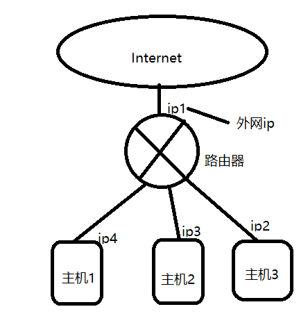
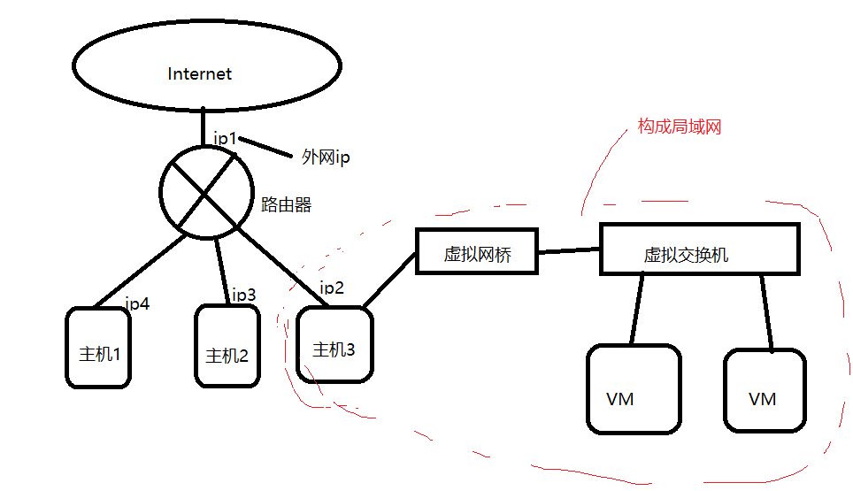
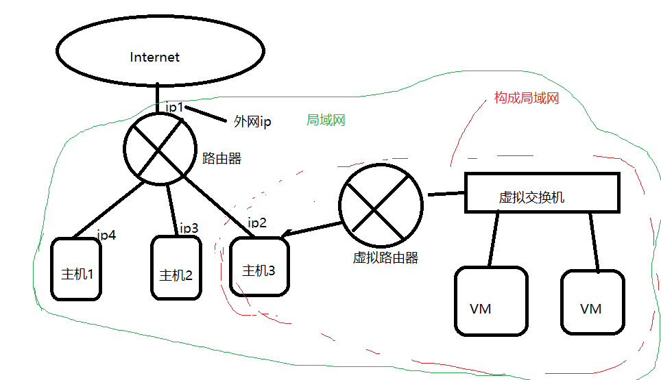
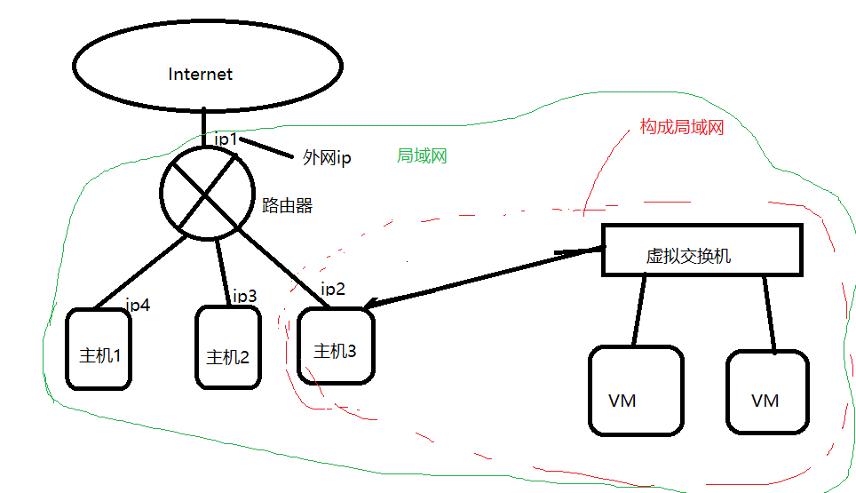

网络配置和远程登录
[内容来源]: https://www.bilibili.com/video/BV1WY4y1H7d3?p=24&spm_id_from=pageDriver "内容来源尚硅谷教程系列"
本文目标：探索主机和虚拟机通信，在 windows 主机远程登录虚拟机。
知识了解：
网关(Gateway)就是一个网络连接到另一个网络的“关口”
查看 ip 地址：
| 系统 | |
|---|---|
| Windows | ipconfig |
| linux | ifconfig |
一般来说，在公司中，我们的电脑是与公司内部服务器相连的：

我们生活中的电脑如何与 intent 相连？
通过路由器，路由器可以给一个局域网中的 pc 提供一些服务，作为信息传递的介质。路由器上还安装协议 DHCP(动态主机配置协议)管理每个主机的 ip，电脑之间访问是通过 ip 来进行确认的。
路由器对外部有一个外网IP，主机是通过共享外网IP 和 外网进行沟通的。主机1、主机2、主机3和路由器构成一个局域网。

如果我们在自己电脑上安装了虚拟机，那么虚拟机相当于另一台电脑，可以方便我们进行局域网内的一些测试，比如，远程登陆，scoket通信等等。
可以测试在主机和虚拟机之间进行 ping 操作。
如果我们查看 windows下的网络链接（虚拟网卡），多了两个 VMnet1 和 VMnet8？
VMnet8 的ip地址和虚拟机的ip地址在同一个网段下，所以这两个可以 ping 的通。
VMware 提供了三种网络连接模式：
桥接模式
虚拟机直连外部物理网络，虚拟机可直接访问外网，对外可见，低位和物理主机相同。

NAT 模式
顾名思义，网络地址转换协议，虚拟机和主机构建一个专用网络（局域网），通过虚拟 NAT 设备对 ip 进行转换。虚拟机通过共享主机 ip 可访问外部网络，外部网络无法访问虚拟机。

实际上并不是创建虚拟路由器，而是 NAT 和 HDCP 两个功能协议。
仅主机模式：虚拟机与主机共享一个专用网络，与外部网络无法通信。

如果仔细观察会发现 主机 ip 地址和虚拟机 ip 地址不是同一个网段下的，但是为什么它们之间还能 ping 通？
我们之前安装的是NAT模式，即使主机 ip 地址和虚拟机 ip 地址不同，也能够 ping 通，是因为我们的主机3中创建了一个虚拟网卡，这个网卡接到虚拟路由上，这个虚拟网卡就是叫做 VMnet8。所以 VMnet8的ip和虚拟机的ip是属于同一个网段的。
如果是仅主机模式下，那么主机3会构建一个虚拟网卡，用来和虚拟交互机互连，
并与VM构造一个虚拟子网。
因此如果选择桥接 模式，必须将虚拟机的 ip 设置成和主机的网段一样，网关设置一样。
配置静态 ip 地址
为什么要配置静态 ip 地址？
因为每次启动机器时，DHCP 是动态分配 ip 给虚拟机和物理主机的，写程序啊什么的不可能每次都要改一下ip输入吧！！！
我们这里将会对 虚拟机进行静态 ip 的配置，物理机则不用，因为我们的实验目标是用 windows远程登录 linux系统啊。
① 用终端打开文件
vim /etc/sysconfig/network-scripts/ifcfg-ens33(可通过ifconfig查看ip在哪个文件，这里是 ifcfg-ens33)
② 修改 BOOTPROTO="dhcp" 改成 BOOTPROTO="static"
③ 添加ip 地址：
IPADDR=192.168.19.100
GATEWAY=192.168.19.2
DNS1=192.168.19.2
保存文件。
④ 重启网络配置：
[root@hadoop100 ~] service network restart
配置好后，可以去windows进行ping，查看是不是可以 ping 通。ping不通可能是防火墙的问题。
配置主机名
为什么配置主机名？方便远程登录时，输入主机名即可。
显示主机名：
[root@hadoop100 ~] hostname
vim /etc/hostname
修改其名（需要重启）
或者 hostnamectl set-hostname hadoop99
再打开终端就改掉主机名了。
hosts 文件的作用
配置 hostname 和 ip 地址的映射。
修改了主机名后，去host文件配置ip和主机名：
192.168.19.100 hadoop100
windows 下的hosts文件路径：C:\Windows\System32\drivers\etc
这时候，在windows 下直接 ping hadoop100 就能 ping 通对应的 ip。
远程登录
上面都配置好后，在windows cmd 下输入
ssh root@hadoop100
输入密码，就进入了虚拟机root权限了。可以查看目录。
可以使用 Xshell ，SSH secure Shell等软件，可以记住密码，每次登录不用重新输入密码。
Xftp 7可以连接远程，并进行客户端和服务端的文件传输。远程拷贝和复制等。
如果显示中文出现乱码：
点击菜单栏的属性-选项-编码，选utf-8。